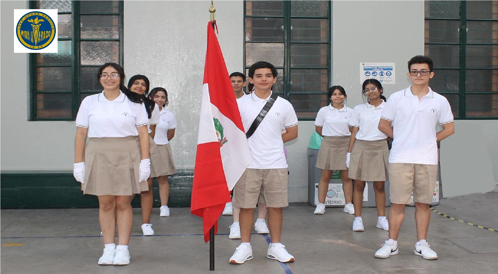
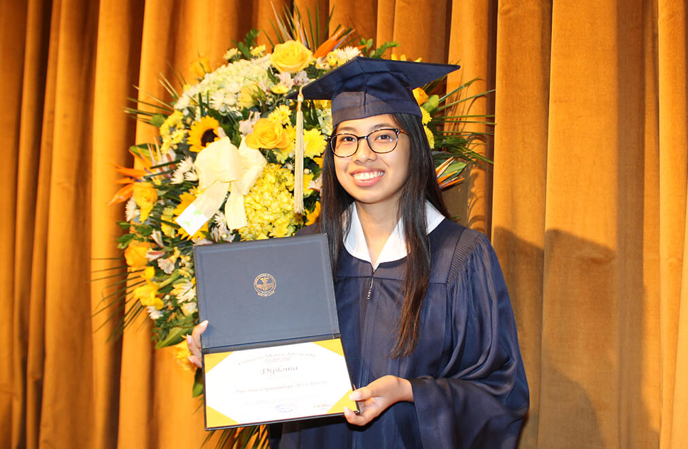

Nosotros
Somos una institución educativa cristiana metodista, comprometida en la formación integral de mujeres y hombres autónomos, creativos, críticos y democráticos, que basados en valores de amor, honor y servicio son consecuentes con la defensa de la vida y el ejercicio de la ciudadanía a la luz del evangelio.
Bienvenido al Colegio María Alvarado – Lima High School
El Colegio María Alvarado-Lima High School, es una institución educativa fundada en el año 1906 bajo el nombre de Lima High School, por la señorita Elsie Wood, misionera y educadora norteamericana quien propició el desarrollo integral del ser humano basado en una relación vital con Jesucristo. Ninoshka Naraza Córdova, es la actual directora.
“Instruye al niño en su camino, y aun cuando fuere viejo no se apartará de él”. Proverbios 22:06

¿Por qué elegirnos?
Esta institución lleva 116 años brindando educación de calidad
Llevamos 111 promociones graduadas desde 1910
En total, 24624 alumnos han recorridos nuestras aulas desde 1960
Nuestras Instalaciones.
Nuestra Propuesta
¿Qué es para nosotros?
Trabajar por competencias para garantizar los aprendizajes previstos a partir de situaciones significativas generando conflictos cognitivos, promoviendo el pensamiento complejo, el análisis de la realidad y gestionando el error como oportunidad de aprendizaje. La evaluación es formativa y sumativa.
Valores Cristianos
Como institución promovida por la Iglesia Metodista del Perú desarrollamos los valores cristianos de nuestra fe: creemos en Dios, en Jesús, en la familia, en el servicio, valoramos la vida, nos basamos en la Biblia y la estudiamos.
Nuestros valores tradicionales
AMOR, HONOR y SERVICIO.
Disciplina
Consideramos que es importante para la formación del carácter de nuestros estudiantes, por ello enfatizamos el desarrollo de valores y hábitos como la puntualidad, respeto y responsabilidad con miras a lograr una autonomía que les ayude a tomar buenas decisiones en su presente y marquen positivamente su futuro.
Dominio del idioma inglés y portugués
Un manejo suficiente de ambos idiomas provee a nuestros estudiantes las herramientas necesarias para comunicarse efectivamente y ampliar su acceso a oportunidades académicas, tecnológicas, científicas, culturales y laborales.
Tecnología
Se utiliza la tecnología de manera cotidiana dentro de las diferentes áreas académicas, trabajamos el desarrollo del pensamiento computacional y la ciudadanía digital. Los proyectos les permiten interactuar con diferentes programas. El curso de robótica con programación con Lego y Arduino permite el trabajo colaborativo y el pensamiento lógico.

Perfil del estudiante
Es una persona competente para desarrollar su proyecto de vida, que se comunica, además, en inglés y/o portugués, e impacta la sociedad utilizando las competencias desarrolladas de manera presencial y virtual, a la luz del evangelio. Es una persona principalmente creativa, crítica, democrática y autónoma que basa su vida en los valores de amor, honor y servicio.